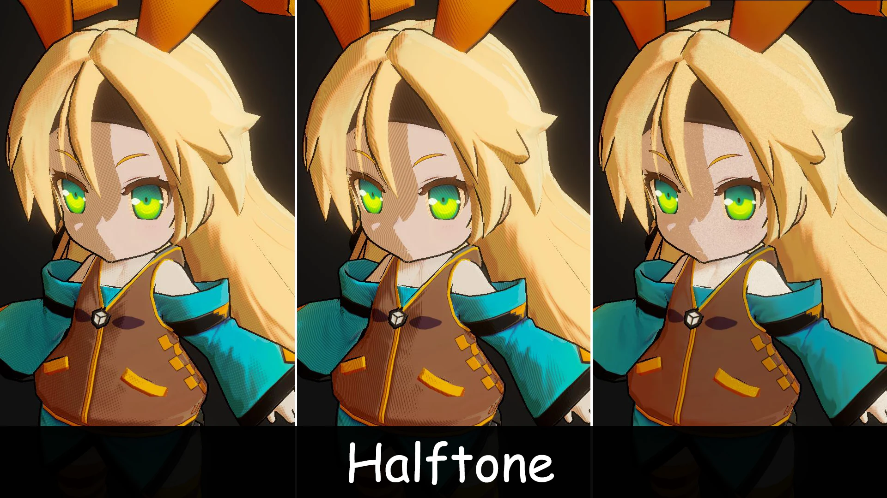
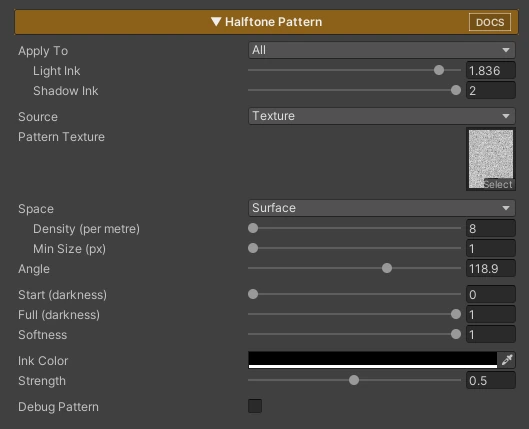

Halftone Pattern

Draws shading as print-style ink: halftone dots, hatching lines, cross-hatch, or your own pattern texture. The darker the painted color, the bigger the dots, so shadows turn into a screen-tone look like comics and printed illustration.
(Halftone Pattern will be added in Version 2.3.0.)
Turn on Halftone Pattern in the Features grid and its section appears.

Parameters
- Apply To : Where the ink can appear
- Shadow : The shadow side, both steps when 2 Shadows is on
- Second Shadow : Only the second shadow (needs 2 Shadows in ToonRampShade)
- All : The whole surface. Dark colors get ink even in the light, like a printed page
- Light Ink / Shadow Ink / Second Shadow Ink : Ink weight for each area (0 = none / 1 = normal / 2 = heavier). Only the areas used by Apply To are shown
- Source : Where the dot shape comes from
- Math : Built-in shapes, no texture
- Texture : Your own pattern texture (see Custom Pattern Texture)
- Pattern Type : Dots (halftone) / Lines (hatching) / Cross (cross-hatch). Math source only
- Pattern Texture : The pattern tile. Texture source only
- Space : How the pattern is placed
- Surface : Stuck to the character, moves with it, no UV seams
- Screen : Flat on the screen like a printed page, sized by how big the character appears. Can shimmer while the character moves
- Density (per metre) : Surface only. Dots per metre on the character (higher = smaller dots)
- Screen Cells / Reference Distance / Distance Scaling : Screen only. Dot count per screen height at the Reference Distance, and how much dot size follows camera distance (0 = fixed on screen / 1 = follows fully)
- Min Size (px) : When dots get smaller than this on screen, they blend into a flat tone of the same darkness instead of turning into noise
- Angle : Rotation of the pattern
- Start / Full (darkness) : How dark a color must be before ink starts, and where cells are fully inked. Lower Full = heavier ink overall
- Softness : Edge blur of each dot or line (0 = crisp)
- Ink Color : Color of the dots or lines
- Strength : Blend of the ink over the shaded color (1 = solid ink)
- Debug Pattern : Shows the pattern alone, white on black, for tuning size and range
How Ink Amount Works
Ink follows the darkness of the painted color (texture × Shadow Color or Base Color). Light intensity does not change it, so a pale material stays light and a dark one gets heavier ink. Switching Apply To only changes where ink can appear, not how much.
Custom Pattern Texture
Any tileable grey image works as a pattern. Dark pixels get ink first, light pixels last, so the dots grow from dark to light as the color gets darker.
- Starter tiles are in ZLZ / Common / Textures / Pattern (Dot, Line, Cross, Diamond, Rough Dot, Stipple, Sketch Hatch, Grain)
- Import settings: sRGB off, Wrap Mode Repeat, Compression None
- Grey values spread evenly from black to white give the most accurate darkness
Tips
- If dots look too dense or too sparse, change Density (Surface) or Screen Cells (Screen)
- If shadows look too dark or too light, adjust Full (darkness) or the Ink sliders
- If far away characters show noise, raise Min Size
- If the ink looks too harsh, lower Strength or use a darker version of Shadow Color as Ink Color
Performance
Math source uses only arithmetic, no texture. Texture source adds 3 texture samples per pixel in Surface space, 1 in Screen space.